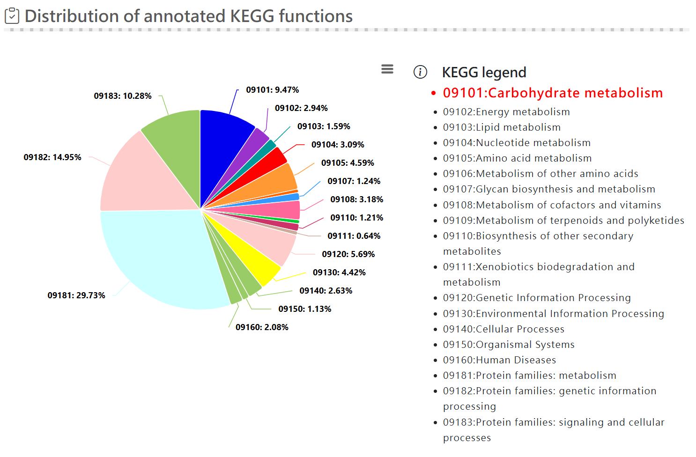
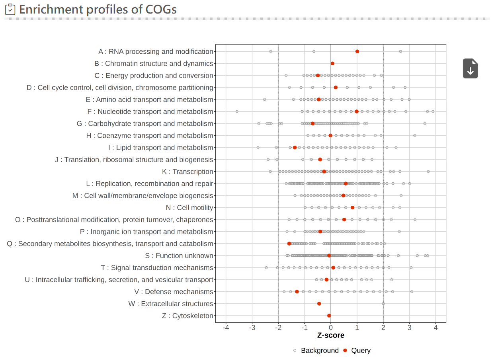
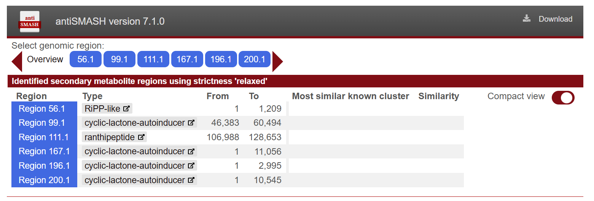

Functional analysis
|
 Distribution of KEGG function result |
 Enrichment profiles of COGs result |
|
 antismash result |
|
Functional analysis includes the following components :
KEGG pathway
Maps genes to known biochemical metabolic networks and signal transduction pathways, facilitating a holistic understanding of the strain's overall metabolic capacity and system-level functions.
KEGG function
Performs functional classification and annotation of genes, assigning them to specific molecular functions and enzymatic roles to evaluate the genome's functional composition profiles.
COGs
Aligns and classifies protein sequences into distinct functional categories labeled from A to Z, systematically profiling the proportion and distribution of the strain's gene composition across biological function groups.
CAZy
Classifies enzymes involved in the synthesis, degradation, or modification of carbohydrates, providing an evaluation of the strain's capacity to utilize polysaccharides and carbohydrates.
antiSMASH
Serves as a standard analytical tool for the automated identification, annotation, and structural prediction of secondary metabolite biosynthetic gene clusters (BGCs) within the genome.
gutSMASH
Primary metabolite analysis of bacterial strains